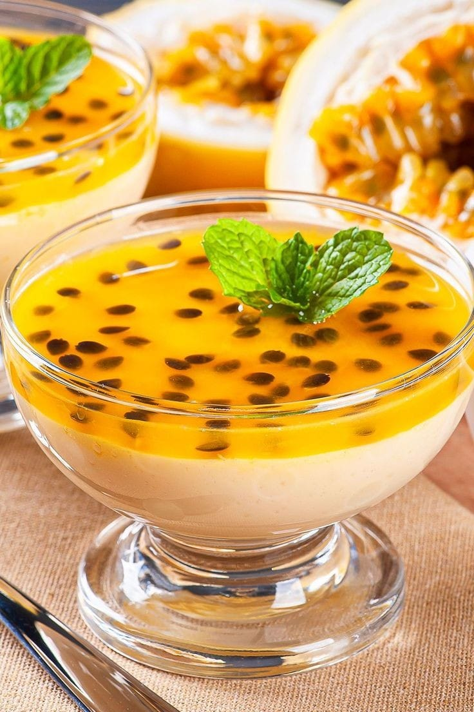

- Mousse de Maracujá
- Bolo de Chocolate
- Bombom de Uva na Travessa
- Prestígio Caseiro
Mousse de Maracujá
Ingredientes
- 3 frutas de maracujá
- 1 caixa de leite condensado
- 1 caixa de creme de leite
- 100 ml de água
Modo de Preparo
- Adicione a polpa do maracujá e a água em liquidificador e bata
- Logo em seguida penere o suco e reserve em uma vasilha separada
- Em seguida adicione o leite condensado e o creme de leite no liquidificador e bata
- Enquanto bate, vá adicionando aos poucos o suco na mistura, e garanta que está bem batido
- Após isso adicione toda a mistura em uma vasilha e deixe ela na geladeira por 1 hora no mínimo